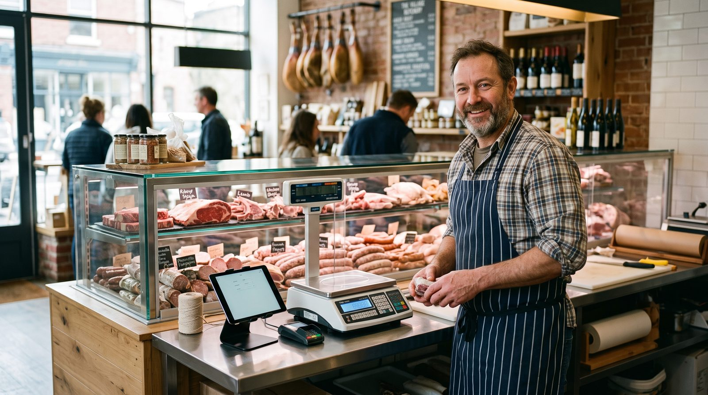

TPV para carnicería: cómo elegir el mejor software con balanza y trazabilidad
Buscar un TPV para carnicería no es lo mismo que buscar una caja para cualquier tienda. En el mostrador de una carnicería o charcutería se vende al peso, se trabaja con lotes y fechas de caducidad, llegan los encargos de fiestas y, muchas veces, atienden varias personas a la vez. En esta guía te explicamos, en lenguaje claro, qué funciones no pueden faltar, qué conviene verificar antes de firmar y cómo elegir un sistema que te ahorre tiempo en la cola y dinero en mermas.

Qué necesita una carnicería de verdad
El error más común al elegir un TPV para carnicería es fijarse solo en lo bonita que se ve la pantalla. Lo que de verdad marca la diferencia detrás del mostrador es otra cosa: que el peso entre solo en el ticket, que sepas qué lote vendiste y cuándo caduca cada bandeja, que puedas preparar los encargos de Navidad sin libretas sueltas y que dos o tres dependientes cobren a la vez sin pisarse. Una charcutería añade matices: productos loncheados, envasados al vacío, surtidos y lotes de regalo que también hay que pesar, etiquetar y controlar.
Por eso conviene mirar el software con ojos de carnicero, no de informático. Antes de comparar precios, haz una lista de tu día a día: cuántas referencias manejas, cuántas personas atienden en hora punta, si vendes por kilo y por pieza, cuántos encargos recibes en fechas señaladas y cómo controlas hoy lo que se acerca a su fecha de caducidad. Esa lista será tu mejor filtro.
Venta al peso y balanza conectada: el corazón del mostrador
La función estrella es la venta al peso. Un buen sistema permite vender por kilo o por fracción, manejar varios decimales y calcular el importe al instante en cuanto la pieza se coloca en la balanza. Lo ideal es que la balanza esté conectada al TPV: así el peso pasa directo al ticket, sin teclear, y el precio se calcula solo. Eso reduce errores, agiliza la cola y deja el inventario cuadrado, porque del stock se descuenta exactamente lo que marcó la báscula.
También conviene que el sistema combine sin esfuerzo dos formas de cobrar: productos al peso (un solomillo, un kilo de carne picada) y productos por unidad (una bandeja preparada, un paquete de salchichas, un lote de fiesta). En charcutería esto es diario: la misma venta puede mezclar lonchas pesadas y piezas envasadas con su precio fijo.
Trazabilidad, lotes y caducidad: control sin libretas
La carne es un producto fresco y delicado, y ahí el software gana o pierde de verdad. Un TPV pensado para carnicería debería ayudarte a registrar el lote y la fecha de cada entrada de mercancía, de modo que puedas seguir el rastro de un producto desde el proveedor hasta el cliente. Esa trazabilidad es oro cuando hay una inspección, una reclamación o, en el peor caso, una alerta sanitaria: en minutos sabes qué entró, cuándo y a quién pudo llegar.
El otro frente es la caducidad. Un sistema que te avisa de las fechas próximas te permite aplicar la lógica de "lo primero que entra, lo primero que sale", mover a tiempo lo que está cerca del límite y, sobre todo, reducir mermas. Menos producto tirado es, directamente, más margen.
Charcutería: el mismo control, más referencias
En una charcutería el catálogo se multiplica: embutidos, quesos, ibéricos, conservas, platos preparados. Cuantas más referencias, más fácil es perder el control de fechas y lotes a mano. Aquí un buen inventario con seguimiento por lote no es un lujo, es lo que evita sustos y dinero perdido en el contenedor.
Funciones imprescindibles de un TPV para carnicería
Más allá del peso y la trazabilidad, esto es lo que debería ofrecerte un buen sistema en 2026:
- Venta al peso con balanza: cobro por kilo o fracción, con la báscula integrada (a verificar según tu modelo).
- Trazabilidad y lotes: registro de entradas, proveedor y lote para seguir cada producto.
- Control de caducidad: avisos de fechas próximas para rotar el género y reducir mermas.
- Pedidos y encargos de fiestas: anotar reservas de Navidad, Pascua o eventos con cliente, fecha y producto.
- Varios vendedores: que dos o tres dependientes cobren a la vez, cada uno con su usuario y sus permisos.
- Inventario y márgenes: saber qué se vende, qué te queda y cuánto ganas en cada corte.
- Manejo de IVA: aplicar correctamente el tipo de cada producto en el ticket.
- Modo sin conexión: seguir cobrando aunque se caiga internet y sincronizar al volver.
- Crédito a clientes (fiado): anotar la cuenta del cliente de confianza que paga a fin de mes.
- Facturación electrónica: preparado para la factura electrónica según la normativa de tu país.
Este mismo planteamiento sirve en otros mercados. En México, por ejemplo, quien busca un sistema de punto de venta para carnicería prioriza casi lo mismo: vender por kilo o a granel, conectar la báscula, controlar mermas y mantener los márgenes a la vista. Cambian los detalles fiscales y el vocabulario, pero el mostrador pide lo mismo en todas partes.
Nuestra recomendación
Comparamos las opciones por su relación calidad-precio real: lo que de verdad pagas al año, qué incluye el plan base, si cubre la venta al peso y la trazabilidad, y qué tan bien se adapta a una carnicería o charcutería con varias personas atendiendo. Esta es nuestra selección.
digabloPos
digabloPos es un punto de venta en la nube moderno que cubre lo que otros cobran aparte. Su plan base es gratis para siempre (sin límite de tiempo y sin tarjeta de crédito), está listo en unos 5 minutos y no te obliga a pagar comisión sobre tus cobros. Incluye inventario con márgenes, modo sin conexión con sincronización automática, varios vendedores con permisos, manejo de crédito a clientes (fiado) y módulos opcionales que activas solo cuando los necesitas. Está además preparado para la facturación electrónica.
Sobre la venta al peso: para una carnicería es la función crítica. digabloPos contempla la venta al peso con balanza; antes de contratar te recomendamos confirmar directamente con el proveedor qué modelos de báscula son compatibles y cómo se realiza la conexión, para asegurarte de que encaja con tu mostrador.
👍 Fortalezas
- Plan base gratis, sin compromiso
- Venta al peso / balanza (verificar tu modelo)
- Funciona sin internet, con sincronización
- Inventario y márgenes a la vista
- Varios vendedores con permisos
- Crédito a clientes (fiado)
- Módulos que crecen contigo
- Preparado para la facturación electrónica
👎 A tener en cuenta
- Marca más nueva que los gigantes del sector
- Conviene confirmar la compatibilidad con tu balanza
- Algunos módulos avanzados son de pago
Software TPV especializado en alimentación
Existen soluciones muy centradas en el comercio de alimentación, con conexión a balanza, etiquetado y trazabilidad pensados para carnicerías y charcuterías. Suelen ser muy completas para la venta al peso, pero a menudo implican licencia de pago o cuota y, en algunos casos, hardware concreto. Buena opción si necesitas funciones muy específicas de etiquetado, siempre que compares el coste total a 12 meses.
ERP de comercio con módulo de TPV
Más que un TPV, es un sistema de gestión completo: compras, inventario, finanzas y ventas en un mismo lugar. Potente para negocios con varias tiendas o un volumen alto, pero requiere contratar planes completos y tiene una curva de aprendizaje mayor que un punto de venta sencillo. Para una carnicería de barrio puede resultar excesivo.
TPV genérico de tienda
Los TPV pensados para tiendas por unidad funcionan bien para cobrar, pero flojean en lo específico: venta al peso limitada, poca trazabilidad por lotes y control de caducidad escaso. Sirven como caja, pero te obligan a llevar a mano justo lo que más cuesta en una carnicería. Justos como sistema central para este sector.
¿Quieres probar sin gastar nada?
El plan base de nuestra opción #1 es gratis para siempre, listo en 5 minutos y sin tarjeta de crédito.
Crear mi caja gratis, 5 minTabla comparativa
| Criterio | digabloPos | TPV alimentación | ERP comercio | TPV genérico |
|---|---|---|---|---|
| Plan base gratis | Sí | No (de pago) | No (de pago) | Según producto |
| Venta al peso / balanza | Sí (verificar modelo) | Sí | Sí | Limitado |
| Trazabilidad y lotes | Sí | Sí | Sí | Limitado |
| Control de caducidad | Sí | Sí | Parcial | No |
| Varios vendedores | Sí | Sí | Sí | Parcial |
| Modo sin conexión | Sí | Parcial | Parcial | Limitado |
| Crédito a clientes (fiado) | Sí | Según producto | Sí | No |
| Tiempo de configuración | ~5 min | Medio | Alto | Rápido |
Comparativa orientativa de junio de 2026. Las categorías #2 a #4 describen tipos de solución, no marcas concretas. Las funciones, precios y compatibilidades cambian con frecuencia: confirma siempre los detalles, especialmente la conexión con tu balanza y la facturación electrónica, directamente con cada proveedor antes de decidir.
IVA, márgenes y mermas: que las cuentas salgan
Una carnicería vive de los márgenes, y ahí el software ayuda más de lo que parece. Un buen sistema aplica el tipo de IVA correcto a cada producto en el ticket y te deja ver, por referencia, cuánto ganas de verdad. Cuando el precio de compra de la carne sube, conviene poder revisar márgenes con datos, no a ojo.
El otro gran sumidero de dinero es la merma: producto que caduca, recortes, peso que se pierde. Un TPV que controla caducidades y descuenta del inventario el peso exacto vendido te da una foto realista de lo que entra, lo que sale y lo que se queda en el camino. Con esa información se toman mejores decisiones: cuánto comprar, qué promocionar antes de que caduque y qué cortes dejan más beneficio.
El consejo práctico: calcula el coste total a 12 meses, licencia o cuota, módulos necesarios y hardware como la balanza, y compáralo con lo que te ahorras en mermas y tiempo de cola. Ese número decide mejor que cualquier folleto.
Cómo elegir, paso a paso
- Confirma la venta al peso. Pregunta qué balanzas son compatibles y cómo se conectan al TPV.
- Revisa la trazabilidad. Que registre lote, proveedor y fecha, y que avise de caducidades.
- Piensa en hora punta. Que varios vendedores cobren a la vez, cada uno con su usuario.
- Prevé las fiestas. Que puedas anotar y gestionar encargos de Navidad, Pascua o eventos.
- Mira IVA y márgenes. Que aplique bien los tipos y te muestre cuánto ganas por producto.
- Verifica la facturación electrónica. Confirma con el proveedor cómo cumple la normativa de tu país.
- Prueba antes de pagar. Un plan gratuito o demo te dice más que cualquier comercial.
¿Listo para agilizar tu mostrador?
Configura tu caja gratis en 5 minutos, sin compromiso y sin tarjeta de crédito. Después confirma con el proveedor la conexión con tu balanza.
Empezar gratis, 5 minPreguntas frecuentes
¿Qué es un TPV para carnicería y en qué se diferencia de uno normal?
Es un punto de venta preparado para vender al peso: se conecta a una balanza para cobrar por kilo o por fracción, calcula el importe al instante y descuenta del inventario la cantidad exacta. Frente a un TPV genérico por unidades, suma trazabilidad por lotes, control de caducidad y, en charcutería, gestión de productos loncheados o envasados. Confirma con el proveedor qué balanzas soporta.
¿Necesito una balanza conectada o puedo teclear el peso a mano?
Puedes teclear el peso, pero conectar la balanza evita errores y acelera la cola: el peso entra solo en el ticket y el precio se calcula al momento. Si te interesa, verifica con el proveedor qué básculas son compatibles y cómo se conectan antes de contratar.
¿Cómo ayuda el TPV con la trazabilidad y la caducidad de la carne?
Registra el lote y la fecha de cada entrada, así puedes seguir el rastro de un producto del proveedor al cliente y recibir avisos de caducidades próximas. Eso facilita rotar el género, reducir mermas y responder ante una inspección. Los requisitos legales de etiquetado y trazabilidad confírmalos con la normativa sanitaria vigente y tu asesor.
¿Un TPV gratuito sirve de verdad para una carnicería?
Sí, si cubre lo esencial: venta al peso, inventario, varios vendedores y márgenes. Un plan gratuito permite empezar a vender y controlar el negocio sin mensualidad. Lo clave es verificar antes la conexión con tu balanza y cómo resuelve la facturación electrónica según tu país.